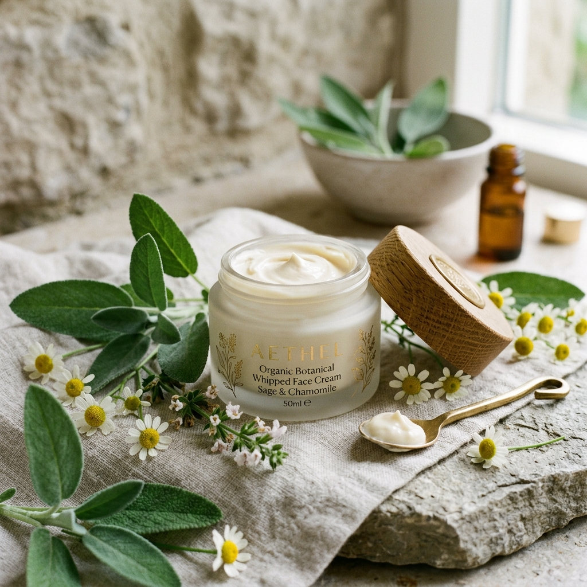
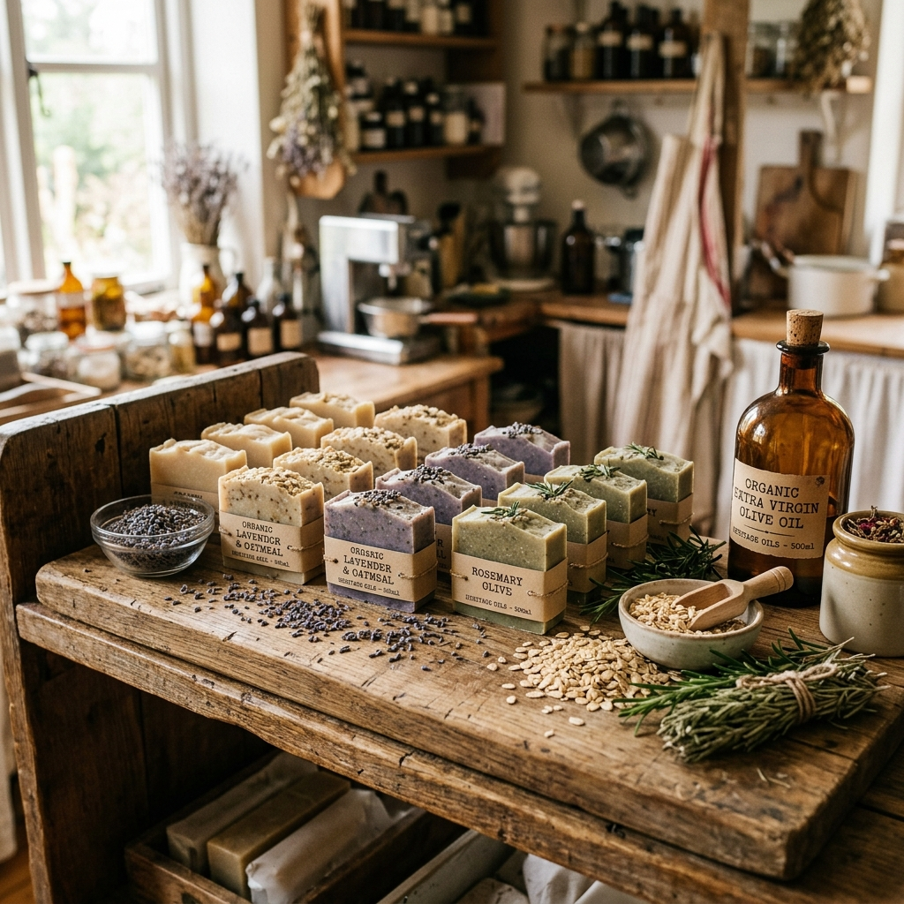

Ingredients
Ingredients
The Lavender Diaries: From Field to Flask
How we source, distill, and bottle the purest lavender essence in the French Alps — a journey of scent, science, and soul.
HERBAL STORIES • SKIN WISDOM • NATURE RITUALS
Dive deep into the world of organic skincare — stories of plants, rituals of renewal, and the ancient wisdom behind every ingredient we use. Your guide to living beautifully, naturally.

From Field to Flask in the French Alps.



Our Stories
Thoughtful reads on ingredients, rituals, and the philosophy of natural beauty. Each article is a window into our world.
Ingredients
How we source, distill, and bottle the purest lavender essence in the French Alps — a journey of scent, science, and soul.
Skin Science
Unpacking the science behind rosehip seed oil — why its fatty acid profile makes it nature's most effective anti-aging ingredient.
 Rituals
Rituals
A simple organic skincare routine that helps thousands feel grounded, glowing, and ready to face the day.

DIY & CraftFrom lye to lather — everything you need to craft your first handcrafted bar at home with clays and essential oils.
 Lifestyle
Lifestyle
Why minimalist skincare with intentional, high-quality plant actives outperforms any 10-step routine.
 Ingredients
Ingredients
Tracing the 3,000-year journey of shea — from the Vitellaria paradoxa tree in West Africa to your daily moisturizer.
Got Questions?
Everything you need to know about our journal stories, ingredient science, and organic skincare guidance.
We publish new herbal stories, ingredient deep-dives, and seasonal self-care rituals every Tuesday morning. Subscribers to our newsletter receive early access before articles go public.
Absolutely. Every article is written or reviewed by our team of ethnobotanists, skin biochemists, and master soap artisans, combining centuries-old herbal wisdom with modern peer-reviewed dermatological research.
Yes! We love community requests. You can submit your questions or requested ingredients via our Contact page or simply reply to any of our weekly email dispatches.
Every formulation is rooted in whole-plant synergy — blending 100% certified organic cold-pressed oils, wild-harvested herbs, and steam-distilled floral hydrosols. We never use water fillers or synthetic preservatives; every single ingredient serves a direct herbal purpose.
Explore our Journal categories (Ingredients, Rituals, Skin Science) or visit our Services page to explore our specialized herbal facial and body treatment recommendations tailored to sensitive, dry, or aging skin.